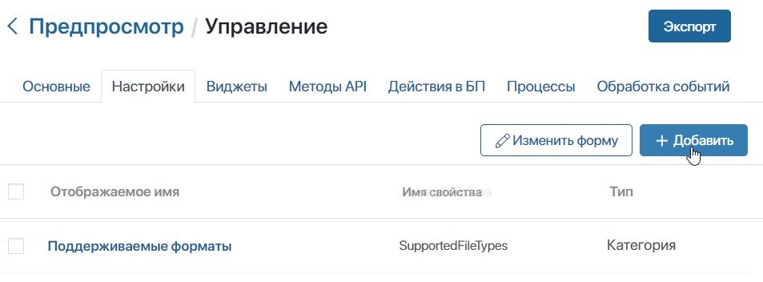
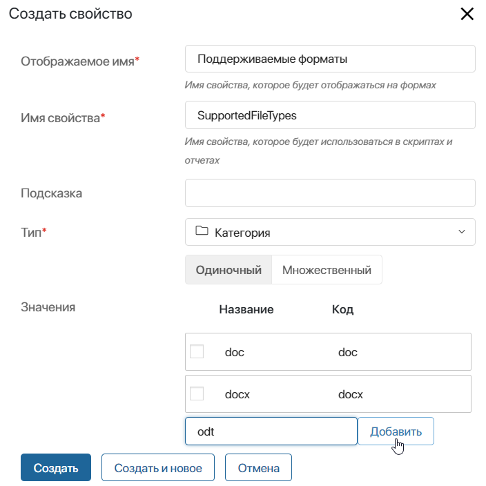
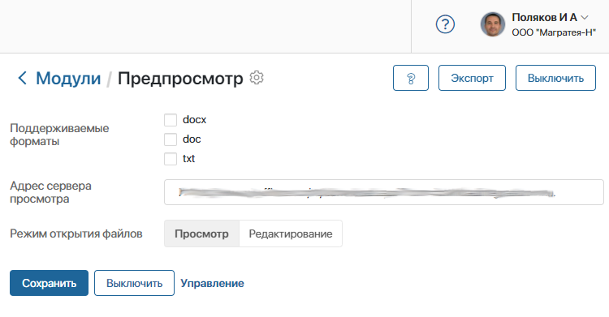
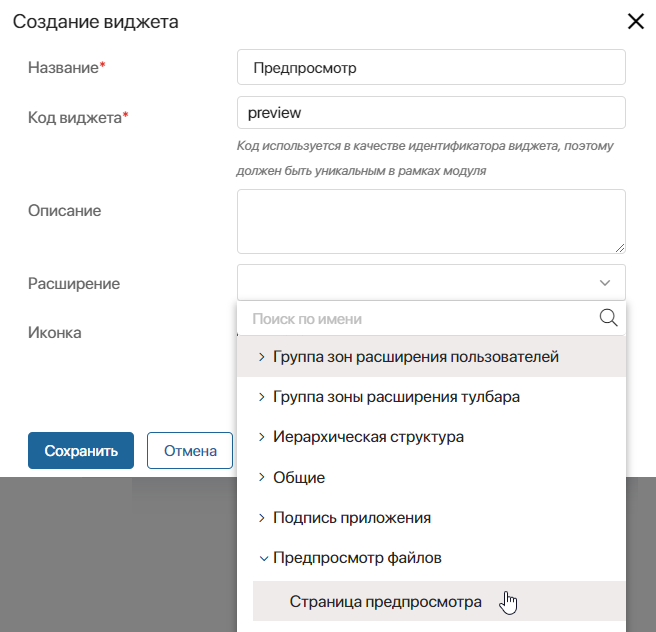
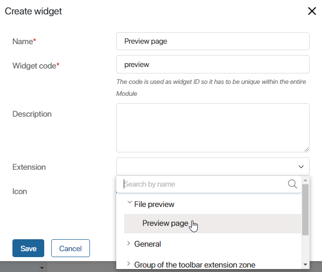
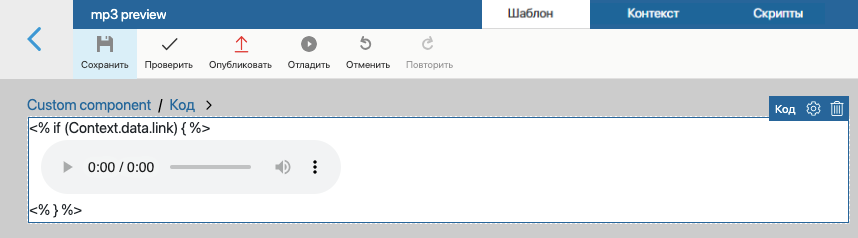

В ELMA365 с помощью модулей расширения вы можете реализовать просмотр и редактирование типов файлов, которые не поддерживаются в системе по умолчанию.
Например, на странице оформления заказа вы хотите разместить не только текстовое описание, но и схемы монтажа оборудования в формате .djvu. По умолчанию в системе нельзя просматривать файлы такого типа, но вы можете создать пользовательский модуль, который позволит это делать.
начало внимание
Создавать и настраивать модули могут только пользователи, включённые в группу Администраторы.
конец внимание
Архитектура
Модуль для просмотра и редактирования файлов состоит из следующих основных частей: параметры конфигурации, виджет типа Страница предпросмотра и методы API.
Параметры конфигурации определяют поведение модуля в целом. Это могут быть, например, поддерживаемые форматы файлов, адрес сервера просмотра, язык интерфейса и т. д.
Логика просмотра и редактирования реализована в виджете типа Страница предпросмотра с помощью клиент‑серверных скриптов.
Методы API в составе модуля обеспечивают обмен данными, если в рамках модуля настроена интеграция с внешним приложением.
Создание и настройка модуля
Чтобы создать новый модуль, перейдите в Администрирование > Модули, нажмите кнопку + Модуль. В открывшемся окне выберите опцию Создать. Заполните информацию о модуле и нажмите кнопку Создать. Подробнее об этом читайте в статье «Создание модуля».
Добавление параметров для подключения модуля
На вкладке Настройки можно создавать, редактировать и удалять общие параметры модуля, которые заполняются при его подключении.
Параметры являются глобальными — они применяются ко всем файлам в системе, которые просматриваются или редактируются с помощью модуля.
Для создания параметра перейдите на вкладку Настройки и нажмите кнопку + Добавить.

В открывшемся окне заполните поля и нажмите кнопку Создать.
Обязательным параметром для модуля просмотра и редактирования файлов является свойство SupportedFileTypes. В нём хранятся поддерживаемые форматы файлов. Задайте для свойства следующие настройки:

- Отображаемое имя* — укажите название поля, которое будет отображаться на странице подключения модуля. Может быть любым, например, Поддерживаемые форматы;
- Имя свойства* — укажите значение
SupportedFileTypes. Данное имя свойства обязательно. По нему производится поиск модуля, с помощью которого будет открыт загруженный файл с определённым расширением; - Тип* — Категория. Чтобы модуль поддерживал несколько файловых расширений, выберите тип Множественный;
- Значения — добавьте форматы файлов, которые будут открываться с помощью модуля, например, doc, docx и odp.
Также вы можете добавить на страницу настроек модуля поля для переключения режима открытия файлов, указания адреса стороннего сервера и т. д.
Все добавленные свойства отображаются на странице подключения модуля в разделе Администрирование.

При необходимости вы можете изменить стандартную форму представления настроек, например, скрыть часть полей. Для этого на вкладке Настройки нажмите кнопку Изменить форму. В открывшемся дизайнере интерфейсов вы можете редактировать страницу подключения модуля. Подробнее об этом читайте в статье «Настройки модуля».
Методы API
На вкладке Методы API добавляются методы обмена данными с внешним сервером. Если в создаваемом модуле не предусматривается возможность обмена данными, добавлять методы не нужно.
Например, вы можете создать POST-запрос callback, который при редактировании документа будет получать с внешнего сервера текущий статус этого документа и добавлять его новую версию в ELMA365. Исходный код метода, который можно добавить, приведён в подразделе «Пример интеграции с внешним средством просмотра и редактирования файлов».
Виджет просмотра и редактирования
Виджет типа Страница предпросмотра является главным компонентом модуля. В нём осуществляется обмен данными между ELMA365 и внешним приложением. Чтобы создать виджет:
- Перейдите в настройках модуля на вкладку Виджеты.
- Нажмите кнопку + Виджет.
- В открывшемся окне задайте следующие параметры:
- Название* — укажите название виджета;
- Код виджета* — задайте идентификатор для виджета;
- Расширение — выберите группу Предпросмотр файлов. Укажите тип Страница предпросмотра.

- Нажмите кнопку Сохранить.
После этого откроется дизайнер интерфейсов, в котором можно настроить виджет.
В контексте виджета по умолчанию созданы следующие свойства:
- File — свойство типа Файл. Документ, который открывается модулем просмотра и редактирования;
- ForFile — свойство типа Файлы. Используется при сохранении результата сравнения документа из поля File с другой его версией или другим файлом. Применяется, например, если документ ещё не сохранён в системе или версию нужно добавить к другому файлу. Свойство содержит документ, для которого создаётся версия с результатом сравнения;
- Action — свойство типа Строка. Режим открытия документа: только просмотр, просмотр и редактирование. Может принимать значения view и edit;
- Extension — свойство типа Строка. Расширение файла из свойства File.
Эти переменные отображаются на правой панели дизайнера интерфейса на вкладке Свойства.
Рассмотрим пример использования контекста виджета. Вы можете создать метод, который будет проверять в клиентском скрипте, поддерживается ли модулем просмотр файла определённого типа. Для этого получите расширение файла из контекстной переменной Extension виджета:
function getFileExtension() {
if (Context.data.extension){
return (Context.data.extension[0]);
}
else {
return "";
}
}
Если формат файла поддерживается, функция будет возвращать true, в противном случае — false. В примере ниже разрешена обработка только файлов с расширением .xlsx.
async function canRender() {
let fileType:string = getFileExtension();
if (fileType == "xlsx")
{
return true;
}
else
{
return false;
}
}
Важно: чтобы получить данные документа, используйте серверные скрипты виджета просмотра и редактирования. Использование клиентских скриптов не рекомендуется, так как у пользователя может быть недостаточно прав на работу с элементом или файлом.
Пример создания модуля просмотра без интеграции со сторонним сервисом
Рассмотрим пример создания модуля, который позволит воспроизводить файлы формата .mp3 в интерфейсе ELMA365. Для создания такого модуля будут использоваться стандартные HTML-элементы без настройки интеграции со сторонним сервисом.
- Перейдите на страницу Администрирование > Модули. В правом верхнем углу нажмите кнопку + Модуль, а затем Создать. Укажите название модуля и краткое описание.
- Перейдите на вкладку Настройки и добавьте обязательное свойство для указания формата файла. Укажите произвольное отображаемое название. В качестве имени свойства используйте значение
SupportedFileTypes, выберите тип Категория > Одиночный, добавьте значение mp3.
- Создайте виджет, который будет воспроизводить файл формата .mp3. Для этого на вкладке Виджеты нажмите + Виджет. Задайте произвольные значения для полей Название и Код виджета, например, mp3 preview. В поле Расширение выберите Предпросмотр файлов > Страница предпросмотра. Нажмите кнопку Сохранить.
- В открывшемся дизайнере интерфейсов перейдите на вкладку Контекст.
- Создайте переменную, которая будет хранить ссылку на обрабатываемый файл. Для этого нажмите + Добавить и задайте следующие значения:
- Отображаемое имя* — Ссылка на файл;
- Имя свойства* —
link; - Тип* — Строка.
- Перейдите на вкладку Шаблон. Добавьте на поле для моделирования виджет Код. В открывшемся окне введите следующий скрипт:
<% if (Context.data.link) { %>
<audio controls>
<source src="<%= Context.data.link%>" type="audio/mp3">
Ваш браузер не поддерживает встроенное аудио. Попробуйте скачать его
<a href="<%= Context.data.link%>" download>по ссылке</a>.
</audio>
<% } %>
В указанном скрипте с помощью стандартных HTML-элементов создаётся окно, содержащее плеер с файлом. В качестве источника для файла служит ссылка, созданная на шаге 5.
После сохранения скрипта на поле для моделирования отобразится созданный плеер:

- Перейдите на вкладку Скрипты. В правом верхнем углу нажмите Клиент. Добавьте код, который будет производить инициализацию виджета:
/** Событие, выполняющееся при инициализации виджета */
async function onInit() {
// Получить ссылку на загрузку файла из контекстной переменной `file`
const file_link = await Context.data.file?.getDownloadUrl();
// Если ссылки нет — завершить работу
if (!file_link) {
return;
}
// Присвоить контекстной переменной `link` значение ссылки на загрузку файла
Context.data.link = file_link;
}
- В левом верхнем углу нажмите кнопку Сохранить, а затем Проверить, чтобы убедиться, что виджет составлен верно. Затем нажмите Опубликовать.
После этого при включённом модуле вы сможете воспроизводить файлы формата .mp3 в интерфейсе ELMA365, добавив их в поле типа Файлы в карточку любого элемента приложения.
Пример интеграции с внешним средством просмотра и редактирования файлов
Рассмотрим интеграцию модуля просмотра и редактирования с внешними приложениями на примере сервиса просмотра Р7-Офис. В этой интеграции c помощью скрипта на языке Javascript реализованы отправка документа и параметров его просмотра на внешний сервер, получение и отображение ответа в ELMA365.
Для создания модуля выполните следующие действия:
- Перейдите на страницу Администрирование > Модули. В правом верхнем углу нажмите кнопку + Модуль, а затем Создать. Укажите название модуля и краткое описание.
- Перейдите на вкладку Настройки и добавьте обязательное свойство для указания формата файла. Укажите произвольное отображаемое название. В качестве имени свойства используйте значение
SupportedFileTypes, выберите тип Категория > Множественный, в поле Значения добавьте поддерживаемые модулем форматы: doc, docx, odt, txt, xls, xlsx, ods, csv, ppt, pptx, odp. - Аналогично создайте два свойства, с помощью которых будет происходить подключение к серверу внешнего средства просмотра файлов, со следующими параметрами:
- Отображаемое имя* — задайте названия для свойств: Адрес сервера ELMA365 и Адрес сервера Р7-Офис;
- Имя свойства* — укажите уникальные имена для свойств:
elmaServerAddressиr7OfficeServerAddress; - Тип* — у обоих свойств установите тип Строка.
- Создайте виджет, который будет открывать файлы указанных форматов. Для этого на вкладке Виджеты нажмите + Виджет. Задайте произвольные значения для полей Название и Код виджета, например, doc preview. В поле Расширение выберите Предпросмотр файлов > Страница предпросмотра.
- В открывшемся дизайнере интерфейсов перейдите на вкладку Контекст.
- Создайте контекстную переменную, которая будет использоваться для передачи параметров с сервера на клиент. Для этого нажмите + Добавить и задайте следующие значения:
- Отображаемое имя* — Дополнительные параметры;
- Имя свойства* —
ExtensionParameters; - Тип* — Строка.
- Перейдите на вкладку Шаблон. Добавьте на поле для моделирования виджет Код. В открывшемся окне введите скрипт, приведённый ниже.
<div style="height: 100%;width: 100%;display: flex;"> |
- Приведённый выше скрипт содержит функции, работу которых необходимо описать на вкладке Скрипты. Перейдите на эту вкладку и в правом верхнем углу нажмите Клиент. Добавьте скрипт, приведённый ниже.
/* window webAPI */ |
- На вкладке Скрипты в правом верхнем углу нажмите кнопку Сервер. Добавьте скрипт, приведённый ниже.
/* Server scripts module */ |
- В левом верхнем углу нажмите кнопку Сохранить, а затем Проверить, чтобы убедиться, что виджет составлен верно. Затем нажмите Опубликовать.
- Закройте дизайнер интерфейсов. В настройках модуля перейдите на вкладку Методы API. Создайте новый метод. Добавьте скрипт, размещённый ниже.
async function callback(req: FetchRequest): Promise<HttpResponse | void> { |
После этого при включённом модуле вы сможете просматривать файлы с форматами, указанными в настройках этого модуля, в интерфейсе ELMA365.